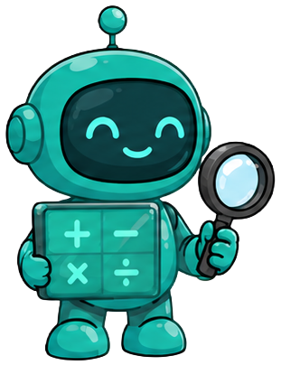

Online Auditing for Early Failure Prediction in Multi-Agent Systems
Abstract
LLM-based multi-agent systems are increasingly deployed on long-horizon tasks, but a single decisive error is often accepted by downstream agents and cascades into trajectory-level failure. Existing work frames this as post-hoc failure attribution, diagnosing the responsible agent and step after the trajectory has ended. However, this paradigm forfeits any opportunity to intervene while trajectory is still unfolding.
In this work, we introduce AgentForesight, a framework that reframes this problem as online auditing: at each step of an unfolding trajectory, an auditor observes only the current prefix and must either continue the run or alarm at the earliest decisive error, without access to future steps.
To this end, we curate AFTraj-2K, a corpus of agentic trajectories across Coding, Math, and Agentic domains, in which safe trajectories are retained under a strict curation pipeline and unsafe trajectories are annotated at the step of their decisive error via consensus among multiple LLM judges.
Built on that, we develop AgentForesight-7B, a compact online auditor trained with a coarse-to-fine reinforcement learning recipe that first equips it with a risk-anticipation prior at the failure boundary on adjacent safe/unsafe prefix pairs, then sharpens this prior into precise step-level localization under a three-axis reward jointly targeting the what, where, and who of an audit verdict.
Across AFTraj-2K and an external Who&When benchmark, AgentForesight-7B outperforms leading proprietary models, including GPT-4.1 and DeepSeek-V4-Pro, achieving up to +19.9% performance gain and 3× lower step localization error, opening the loop from post-hoc failure detection to deployment-time intervention.
Why Online Auditing?
(a) Post-hoc attribution only diagnoses after the trajectory has already failed.
(b) AgentForesight flags the decisive error step-by-step on the unfolding prefix, opening a deployment-time intervention window before the failure is locked in.
Method
(a) AFTraj-2K pairs strictly-filtered safe runs with failure runs annotated at their decisive step via multi-judge voting.
(b) A coarse-to-fine RL recipe first aligns the auditor at the failure boundary, then sharpens it under a three-axis reward over what, where, and who.
Main Results
AgentForesight-7B reaches 66.44 Exact-F1 (+19.88 over DeepSeek-V4-Pro) and tightens overall ASS to 0.59 (3× lower), winning every domain.
Ablation & Analysis
Stage 1 and Stage 2 individually lift Exact-F1; combined they reach 66.4, exceeding either alone by ≥16 points.
Among ten auditors, only AgentForesight-7B sits inside the deployable region (FAR ≤ 20%, Step-Acc ≥ 50%).
Case Study
AgentForesight-7B alone localizes the decisive error to the responsible search_agent. Gemini-3-Flash raises a premature alarm at Step 2; DeepSeek-V4-Pro returns SAFE despite the wrong final answer.

Manager Search Agent